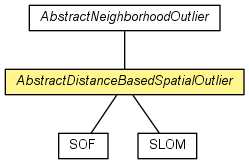

de.lmu.ifi.dbs.elki.algorithm.outlier.spatial
Class AbstractDistanceBasedSpatialOutlier<N,O,D extends NumberDistance<D,?>>
java.lang.Object
 de.lmu.ifi.dbs.elki.algorithm.AbstractAlgorithm<OutlierResult>
de.lmu.ifi.dbs.elki.algorithm.outlier.spatial.AbstractNeighborhoodOutlier<N>
de.lmu.ifi.dbs.elki.algorithm.outlier.spatial.AbstractDistanceBasedSpatialOutlier<N,O,D>
de.lmu.ifi.dbs.elki.algorithm.AbstractAlgorithm<OutlierResult>
de.lmu.ifi.dbs.elki.algorithm.outlier.spatial.AbstractNeighborhoodOutlier<N>
de.lmu.ifi.dbs.elki.algorithm.outlier.spatial.AbstractDistanceBasedSpatialOutlier<N,O,D>
- Type Parameters:
N - Object type for neighborhoodO - Non-spatial object typeD - Distance value type
- All Implemented Interfaces:
- Algorithm, OutlierAlgorithm, InspectionUtilFrequentlyScanned, Parameterizable
- Direct Known Subclasses:
- SLOM, SOF
public abstract class AbstractDistanceBasedSpatialOutlier<N,O,D extends NumberDistance<D,?>>
- extends AbstractNeighborhoodOutlier<N>

Abstract base class for distance-based spatial outlier detection methods.
| Methods inherited from class java.lang.Object |
clone, equals, finalize, getClass, hashCode, notify, notifyAll, toString, wait, wait, wait |
NON_SPATIAL_DISTANCE_FUNCTION_ID
public static final OptionID NON_SPATIAL_DISTANCE_FUNCTION_ID
- Parameter to specify the non spatial distance function to use
nonSpatialDistanceFunction
private DistanceFunction<O,D extends NumberDistance<D,?>> nonSpatialDistanceFunction
- The distance function to use
AbstractDistanceBasedSpatialOutlier
public AbstractDistanceBasedSpatialOutlier(NeighborSetPredicate.Factory<N> npredf,
DistanceFunction<O,D> nonSpatialDistanceFunction)
- Constructor.
- Parameters:
npredf - Neighborhood predicate factorynonSpatialDistanceFunction - Distance function to use on the
non-spatial attributes.
getNonSpatialDistanceFunction
protected DistanceFunction<O,D> getNonSpatialDistanceFunction()
- Get the non-spatial relation
- Returns:
- the distance function to use on the non-spatial attributes